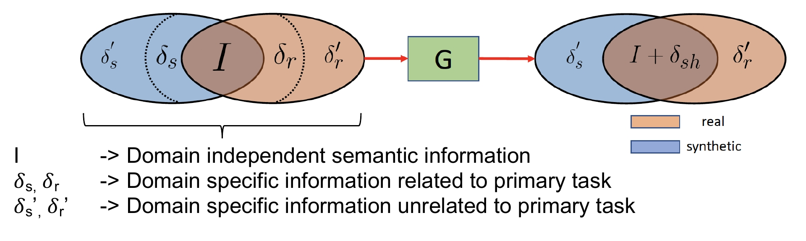
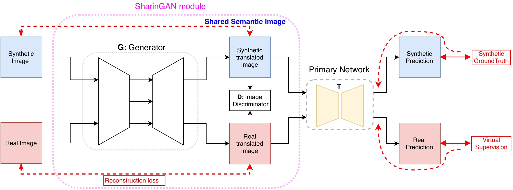

Idea |
|
We propose to reduce the domain gap between synthetic and real by mapping the corresponding domain specific information related to the primary task (δs , δr) into shared information δsh, preserving everything else. |
Method |
|
[Paper Arxiv], to appear in CVPR 2020
@InProceedings{SharinGAN_Koutilya20,
title={SharinGAN: Combining Synthetic and Real Data for Unsupervised Geometry Estimation},
author = {Koutilya PNVR and Hao Zhou and David Jacobs},
booktitle={Computer Vision and Pattern Regognition (CVPR)},
year={2020}
}